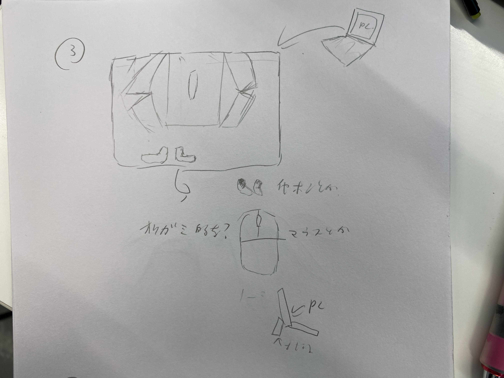
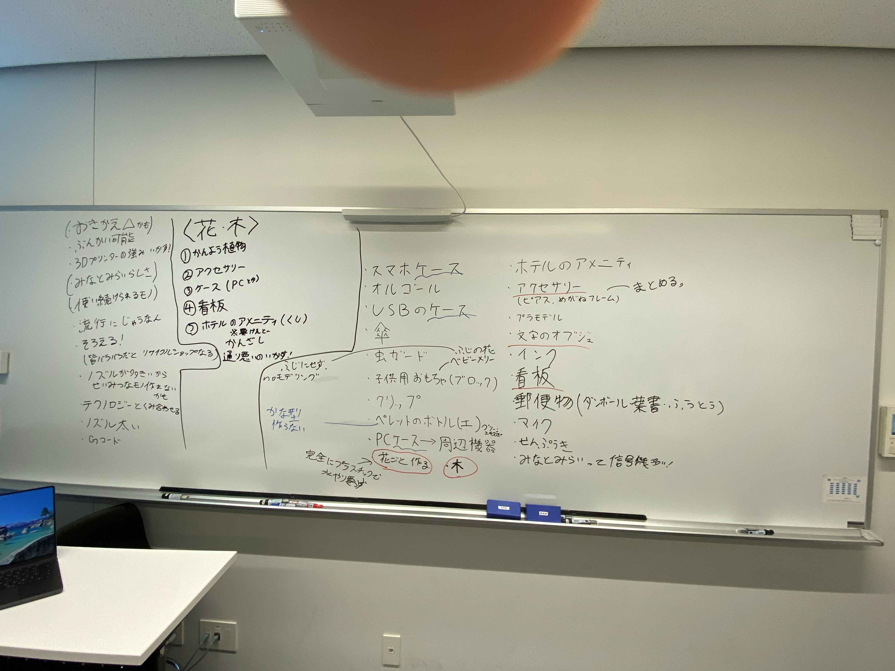
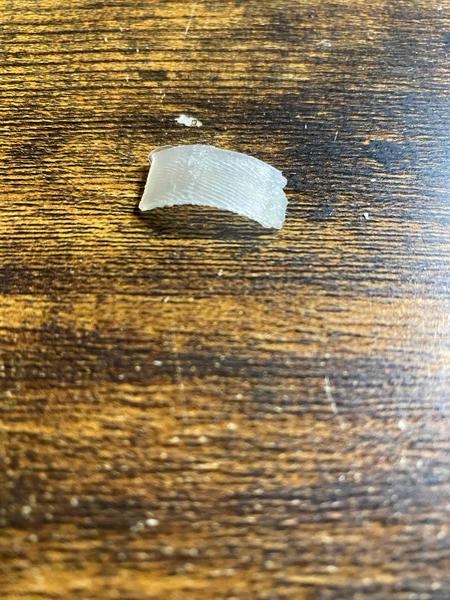

１．作成目標
機能としての作成物としては、分解・組み立てをしてマウスにできるPCケースを作る。
デザインとしては、グループで共通のテーマが「花・木」なので見た目はそちらに寄せていく予定。

デザインとしては、グループで共通のテーマが「花・木」なので見た目はそちらに寄せていく予定。

２．全体の流れ・課題
作成全体の流れとしては
１．PCケース本体の設計と分解するときのめどを立てる
２．分解して組み立てた時にできるマウスの設計
３．実際に分解してマウスにできるかテスト
というものになると予定
初期のうちから考えられる大きな課題は
１．PCケースの衝撃吸収の構造をどう作るか
２．PCケースほどの大きさのものだとPPでは熱収縮するのでそこをどうするのか
３．マウスの基盤などはどこにしまい込むのか
あたりになる
それ以外にもマウスをどんな形にするかなどの基本的な部分もあるが、
そのあたりは作っていく段階で決定しやすいので割愛
１．PCケース本体の設計と分解するときのめどを立てる
２．分解して組み立てた時にできるマウスの設計
３．実際に分解してマウスにできるかテスト
というものになると予定
初期のうちから考えられる大きな課題は
１．PCケースの衝撃吸収の構造をどう作るか
２．PCケースほどの大きさのものだとPPでは熱収縮するのでそこをどうするのか
３．マウスの基盤などはどこにしまい込むのか
あたりになる
それ以外にもマウスをどんな形にするかなどの基本的な部分もあるが、
そのあたりは作っていく段階で決定しやすいので割愛
３．現在の進捗
素材であるPPで衝撃緩衝材は作れるのか実験中
今のところ曲がった板の柔軟性を生かせば作ること自体はできそう
現在直面する課題としては、印刷時の形状や熱収縮はどうするのかという部分がある
今考えている構造だとサポート必須の構造になってしまうことや、
PCケースとしての大きさゆえの熱収縮に対する対策がまだ考え切れていない
今のところ曲がった板の柔軟性を生かせば作ること自体はできそう

現在直面する課題としては、印刷時の形状や熱収縮はどうするのかという部分がある
今考えている構造だとサポート必須の構造になってしまうことや、
PCケースとしての大きさゆえの熱収縮に対する対策がまだ考え切れていない
課題まとめ：
解決しそう→衝撃吸収のための構造
現在直面する課題→熱収縮やサポート不要な形をどうするか
今後の課題→マウスの設計と組み立ての流れをどのようにするのか